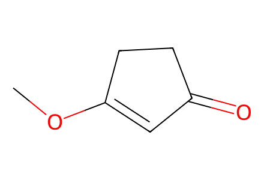
COC1=CC(=O)CC1Main Scheme 1 complete forward 7-step and 10-step synthesis of racemic conidiogenone B, including drawn one-pot intermediates 44-46. Main-only evidence; SI characterization and conditions not locally available. Retrosynthetic, biosynthetic and earlier literature schemes are excluded from this paper forward network. Standard isomeric SMILES encodes a representative enantiomer with source relative configuration, explicitly qualified as racemic. Facts compiled deterministically; independent review pending.
完整 JSON · 逐步 CSV · 路线序列 · SDF · HRMS 核对
| 事件 | 分子连接 | 报告产率 | Canonical reaction SMILES |
|---|---|---|---|
| E01 | 35 + 36 + MeI → 38 | 38: 75% | CC(C)=CCBr.CI.COC1=CC(=O)CC1>>COC1=CC(=O)[C@](C)(CC=C(C)C)C1 |
| E02 | 38 → 39 | 39: 60% | COC1=CC(=O)[C@](C)(CC=C(C)C)C1>>CC(C)=CC[C@@]1(C)C=CC(=O)C1 |
| E03 | 39 → 33 | 33: 85% | CC(C)=CC[C@@]1(C)C=CC(=O)C1>>CC1(C)CC[C@]2(C)CC(=O)C[C@H]12 |
| A01 | 33 + allyl-Br → 40 | not reported | C=CCBr.CC1(C)CC[C@]2(C)CC(=O)C[C@H]12>>C=CC[C@@H]1C(=O)C[C@@]2(C)CCC(C)(C)[C@@H]12 |
| A02 | 40 + acrolein → 41 | 41: 42% | C=CC=O.C=CC[C@@H]1C(=O)C[C@@]2(C)CCC(C)(C)[C@@H]12>>CC1(C)CC[C@]2(C)CC(=O)[C@@H](C/C=C/C=O)[C@H]12 |
| A03 | 41 → 42 | not reported | CC1(C)CC[C@]2(C)CC(=O)[C@@H](C/C=C/C=O)[C@H]12>>CC1(C)CC[C@]2(C)CC(=O)[C@@H](CCCC=O)[C@H]12 |
| A04 | 42 → 32 | 32: 50% | CC1(C)CC[C@]2(C)CC(=O)[C@@H](CCCC=O)[C@H]12>>CC1(C)CC[C@]2(C)CC3=C(CO)CC[C@H]3[C@H]12 |
| E04a | 33 + 43 + NaOtBu → 44 | not reported | CC(C)(C)[O-].CC1(C)CC[C@]2(C)CC(=O)C[C@H]12.CCOC(=O)C1([P+](c2ccccc2)(c2ccccc2)c2ccccc2)CC1.F[B-](F)(F)F.[Na+]>>CCOC(=O)C(CC[C@@H]1C(=O)C[C@@]2(C)CCC(C)(C)[C@@H]12)=P(c1ccccc1)(c1ccccc1)c1ccccc1 |
| E04b | 44 → 45 + 46 | not reported | CCOC(=O)C(CC[C@@H]1C(=O)C[C@@]2(C)CCC(C)(C)[C@@H]12)=P(c1ccccc1)(c1ccccc1)c1ccccc1>>CC(C)(C)OC(=O)C1=C2C[C@@]3(C)CCC(C)(C)[C@H]3[C@@H]2CC1.CCOC(=O)C1=C2C[C@@]3(C)CCC(C)(C)[C@H]3[C@@H]2CC1 |
| E04c | 45 + 46 → 32 | 32: 24% | CC(C)(C)OC(=O)C1=C2C[C@@]3(C)CCC(C)(C)[C@H]3[C@@H]2CC1.CCOC(=O)C1=C2C[C@@]3(C)CCC(C)(C)[C@H]3[C@@H]2CC1>>CC1(C)CC[C@]2(C)CC3=C(CO)CC[C@H]3[C@H]12 |
| E05 | 32 + trimethyl-orthopropionate → 30 | 30: 70% | CC1(C)CC[C@]2(C)CC3=C(CO)CC[C@H]3[C@H]12.CCC(OC)(OC)OC>>C=C1CC[C@H]2[C@@H]3C(C)(C)CC[C@]3(C)C[C@]12[C@@H](C)C(=O)OC |
| E06 | 30 + acetonitrile → 29 | 29: 75% | C=C1CC[C@H]2[C@@H]3C(C)(C)CC[C@]3(C)C[C@]12[C@@H](C)C(=O)OC.CC#N>>C=C1CC[C@H]2[C@@H]3C(C)(C)CC[C@]3(C)C[C@]12[C@@H](C)[C@@H](O)CC#N |
| E07 | 29 → 2 | 2: 45% | C=C1CC[C@H]2[C@@H]3C(C)(C)CC[C@]3(C)C[C@]12[C@@H](C)[C@@H](O)CC#N>>C[C@H]1C=CC(=O)[C@]2(C)CC[C@H]3[C@@H]4C(C)(C)CC[C@]4(C)C[C@@]132 |

COC1=CC(=O)CC1
CC(C)=CCBr
CI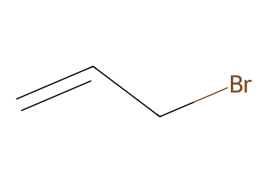
C=CCBr
C=CC=O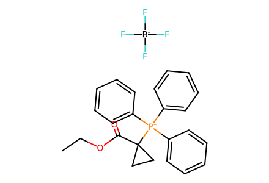
CCOC(=O)C1([P+](c2ccccc2)(c2ccccc2)c2ccccc2)CC1.F[B-](F)(F)F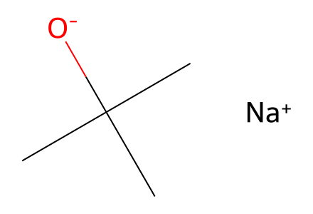
CC(C)(C)[O-].[Na+]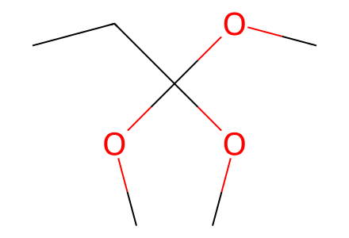
CCC(OC)(OC)OC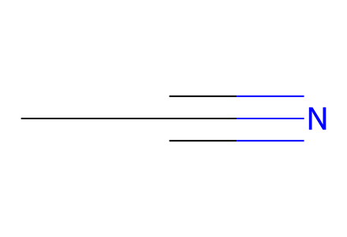
CC#N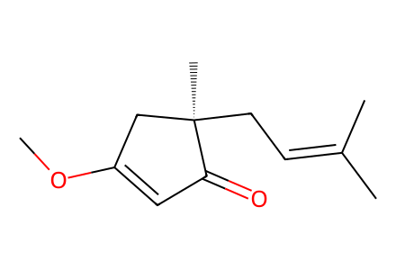
COC1=CC(=O)[C@](C)(CC=C(C)C)C1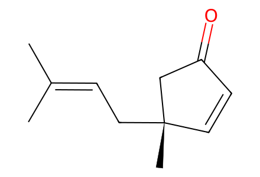
CC(C)=CC[C@@]1(C)C=CC(=O)C1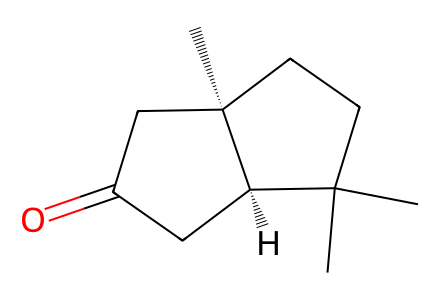
CC1(C)CC[C@]2(C)CC(=O)C[C@H]12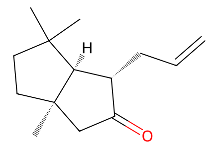
C=CC[C@@H]1C(=O)C[C@@]2(C)CCC(C)(C)[C@@H]12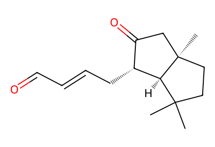
CC1(C)CC[C@]2(C)CC(=O)[C@@H](C/C=C/C=O)[C@H]12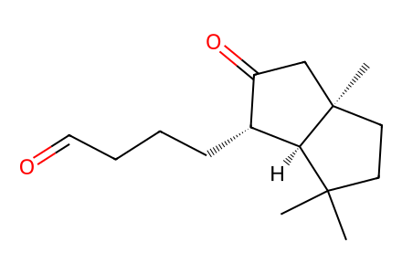
CC1(C)CC[C@]2(C)CC(=O)[C@@H](CCCC=O)[C@H]12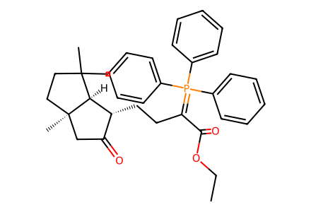
CCOC(=O)C(CC[C@@H]1C(=O)C[C@@]2(C)CCC(C)(C)[C@@H]12)=P(c1ccccc1)(c1ccccc1)c1ccccc1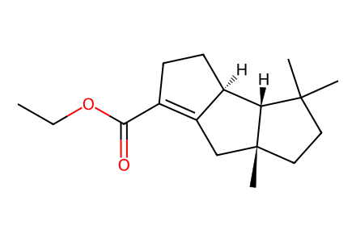
CCOC(=O)C1=C2C[C@@]3(C)CCC(C)(C)[C@H]3[C@@H]2CC1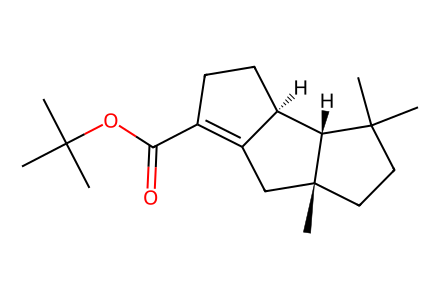
CC(C)(C)OC(=O)C1=C2C[C@@]3(C)CCC(C)(C)[C@H]3[C@@H]2CC1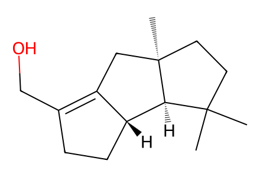
CC1(C)CC[C@]2(C)CC3=C(CO)CC[C@H]3[C@H]12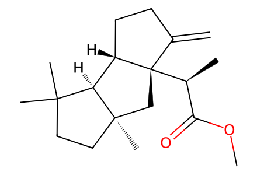
C=C1CC[C@H]2[C@@H]3C(C)(C)CC[C@]3(C)C[C@]12[C@@H](C)C(=O)OC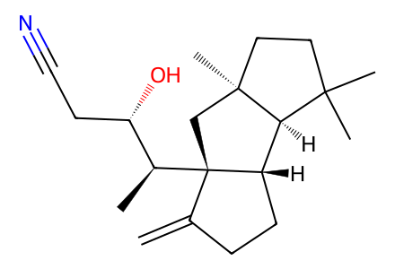
C=C1CC[C@H]2[C@@H]3C(C)(C)CC[C@]3(C)C[C@]12[C@@H](C)[C@@H](O)CC#N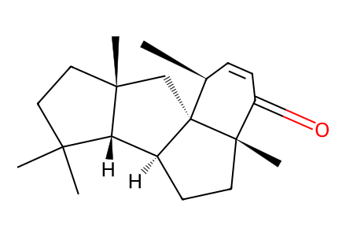
C[C@H]1C=CC(=O)[C@]2(C)CC[C@H]3[C@@H]4C(C)(C)CC[C@]4(C)C[C@@]132